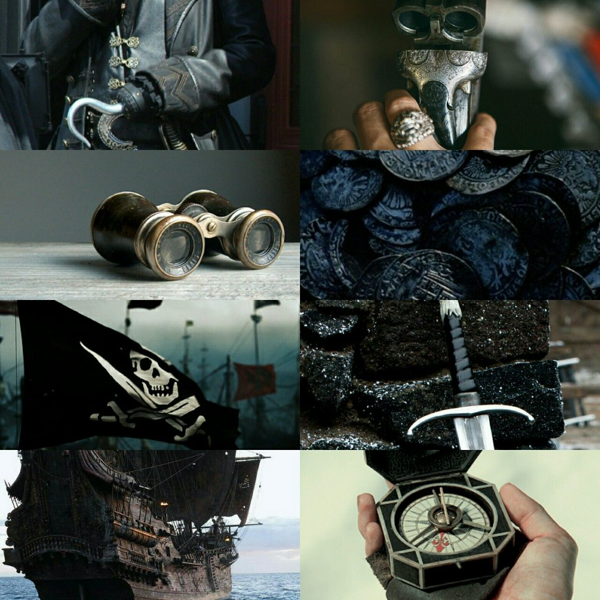
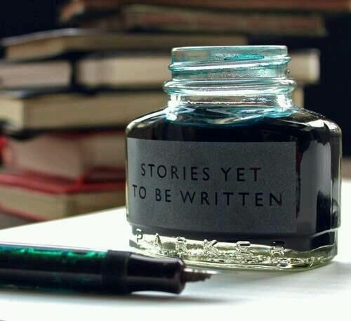
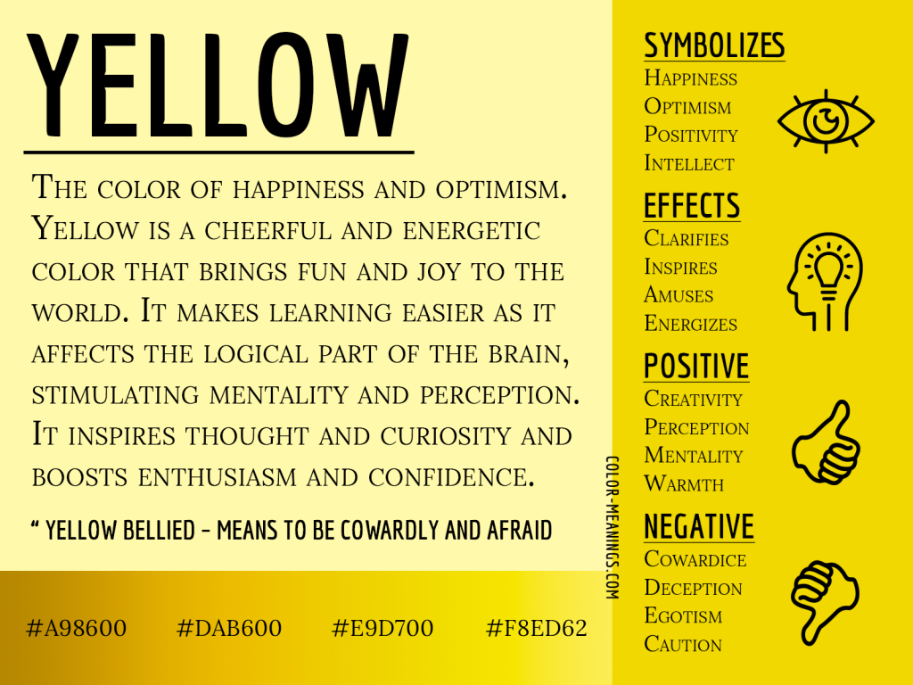

|
|
 |
|---|---|
| Aesthetic | Pirates |
| Aesthetic is a concept where i love to see and find it so attractive where it makes me pleasing. It can be anything but every people have their own perspective of their aesthetic. For me, i love the one with colors of pastel, aesthetic filter or icon, or some words by someone, some scene from movie or anime, a fiction character, beautiful scenery and many more that i couldnt have time to list them. | Most people dont like pirates but i like it. Im kidding, i dont like pirates i just like their concept. The hat, the compass, the binoculars, the chain, the ship of course, the wheel of ship, their treasure hunt, the sea, the mountain, their boots, the map, their coats, and their sword. Also, they are bad people and i kinda like that. I dont talk about the modern one but the old ones in the history. I like it there, the time. I realise i like this concept where i love the movie Pirates of Carribean, Jack Sparrow got my heart and the Davy Jones, yes i like his bad character and appearance so much. Sometimes i thought im weird. Its okay. |
|  |  |
|---|---|
| Making story | Yellow |
| Im an imaginative person. I dont know if its good or not. Whenever i watch movje or drama, there will be some thing that i dont agree either plot or character. From there i make myself satisfy by making my stories. I will create the story, the character and the plot in my mind. I dont have time to write. I just imagine the story. Because of this i dreams to be an author of english novel. This is Because i dont like talk so i write and i dont expert in malay but more confident with english. Yet i dont have the high skills of writing and i have to learn it. Sometimes i thought my dream will just be a dream and i can do it just as a hobby. | I love color yellow. I dont like it naturally since kids though. Actually my eyes are more attract to color of red, pink, black and purple. Yet, when i grown up from time to time where i have experience many worse feelings and loneliness i feel like give up in myself. It was there where i realised that after this i just want happiness and only happiness in this world. As in my journey to become stronger, i found out that color yellow is the meaning for happiness. So there i decide to like it and to use more of it. As i got closer to this color, i realised it is a very beautiful color and i wonder why i dont focus on it before. Sounds weirds but this color has become my special part of life journey. |